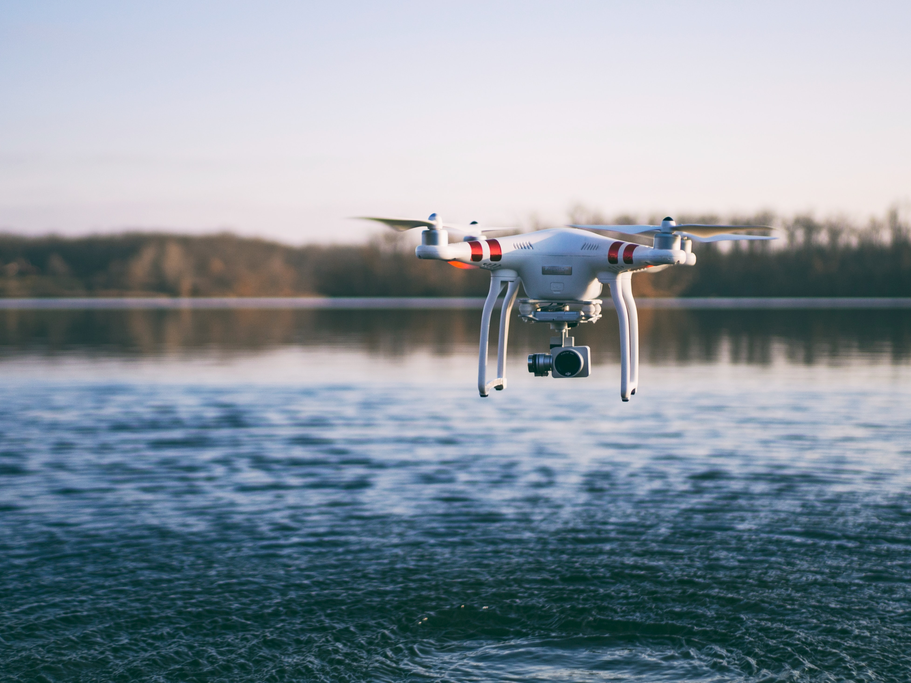

Drony to bezzałogowe statki powietrzne, czyli na pokładzie drona nie potrzeba ludzi do jego pracy.
Również drony mogą być sterowane autonomicznie czyli przez autopilota albo zdalnie sterowane przez kontroler.

Rys.1 Dron nad jeziorem
Rodzaje dronów:
Jest wiele rodzajów dronów od zwykłych ważacych mniej niż ćwierć kilograma,
aż po wielo kilogramowe drony wojskowe zdolne do używania rakiet.